Production curation · 3 September 2026
New releases, exact configurations
The complete 21-benchmark sweep adds newly published Claude Fable 5.1 and Gemini 3.8 Flash configurations, then resolves the previously deferred Qwen3.8-27B identity. All 25 score changes are inserts. No existing curated value, source identity, benchmark version, effort level, or harness is overwritten.
Live publication evidence
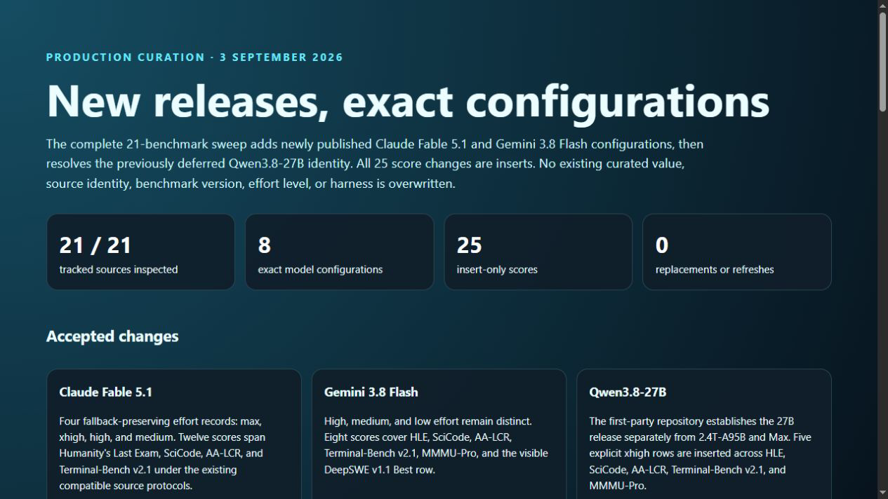
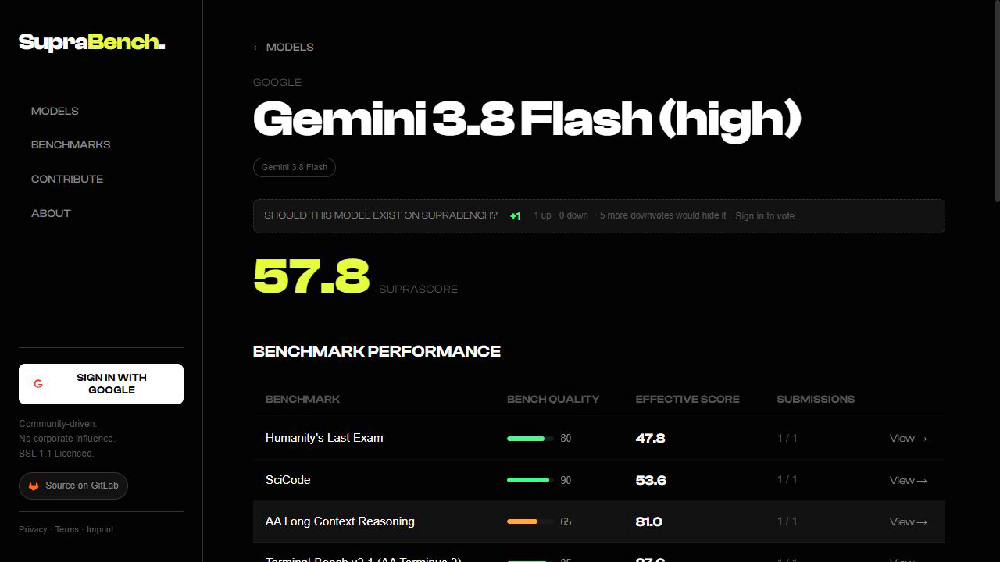
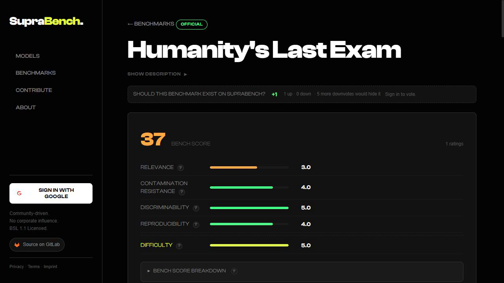
Accepted changes
Claude Fable 5.1
Four fallback-preserving effort records: max, xhigh, high, and medium. Twelve scores span Humanity's Last Exam, SciCode, AA-LCR, and Terminal-Bench v2.1 under the existing compatible source protocols.
Gemini 3.8 Flash
High, medium, and low effort remain distinct. Eight scores cover HLE, SciCode, AA-LCR, Terminal-Bench v2.1, MMMU-Pro, and the visible DeepSWE v1.1 Best row.
Qwen3.8-27B
The first-party repository establishes the 27B release separately from 2.4T-A95B and Max. Five explicit xhigh rows are inserted across HLE, SciCode, AA-LCR, Terminal-Bench v2.1, and MMMU-Pro.
| Benchmark | Accepted rows (stored raw scale) | Protocol note |
|---|---|---|
| Humanity's Last Exam | Fable 5.1 max 591, xhigh 587, high 559, medium 538; Gemini 3.8 high 478; Qwen3.8-27B xhigh 390 | Artificial Analysis score, 0–1000 storage. |
| SciCode | Fable 5.1 max 620, xhigh 601, high 576; Gemini 3.8 high 536; Qwen3.8-27B xhigh 447 | Artificial Analysis methodology, 0–1000 storage. |
| AA Long Context Reasoning | Gemini 3.8 medium 820, high 810; Fable 5.1 max 800; Qwen3.8-27B xhigh 773 | AA-LCR score, 0–1000 storage. |
| Terminal-Bench v2.1 (AA Terminus 2) | Fable 5.1 max 914, xhigh 910, high 899, medium 880; Gemini 3.8 high 876; Qwen3.8-27B xhigh 798 | Terminus 2, e2b, pass@1 over three repeats; kept separate from other versions and harnesses. |
| MMMU-Pro | Gemini 3.8 high 86, low 85; Qwen3.8-27B xhigh 76 | Native 0–100 percentage scale. |
| DeepSWE v1.1 | Gemini 3.8 high 740 | Visible Best row: 74%, stored on 0–1000 scale; mini-swe-agent. |
Deferred deliberately
| Candidate | Reason for no write |
|---|---|
| Terminal-Bench 4.0 | The official table is authoritative and difficult, but mixes Claude Code, Codex, Grok Build, and mini-SWE-agent. A single leaderboard would violate harness identity; splitting it into several scored benchmarks would overweight the same task suite. |
| Vals Finance Agent v2 | Strong professional relevance, but official scoring relies on a private 450-question test set while only 27 public samples are available. |
| Harvey Legal Agent Benchmark | The benchmark is open and substantial, but published results use a held-out split and report material harness and judge divergences. |
| HLE-Rolling | The moving dataset needs a pinned version and compatible public result protocol before it can coexist with static HLE. |
| Qwen3.8 2.4T-A95B / Max rows | The first-party identity is clear, but leaderboard effort labels do not consistently map to the existing Qwen3.8-Max xhigh record. |
| Legacy score migrations | Terminal-Bench Hard, Tau2, TextQuests, and some Kimi rows still require explicit source retirement or configuration mapping; no silent replacement was attempted. |
Visible source evidence
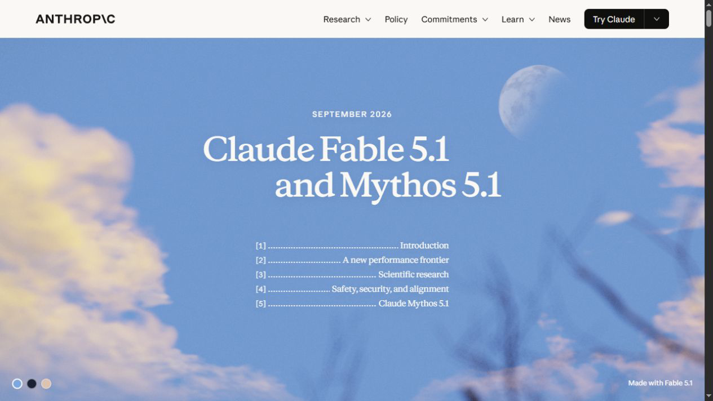
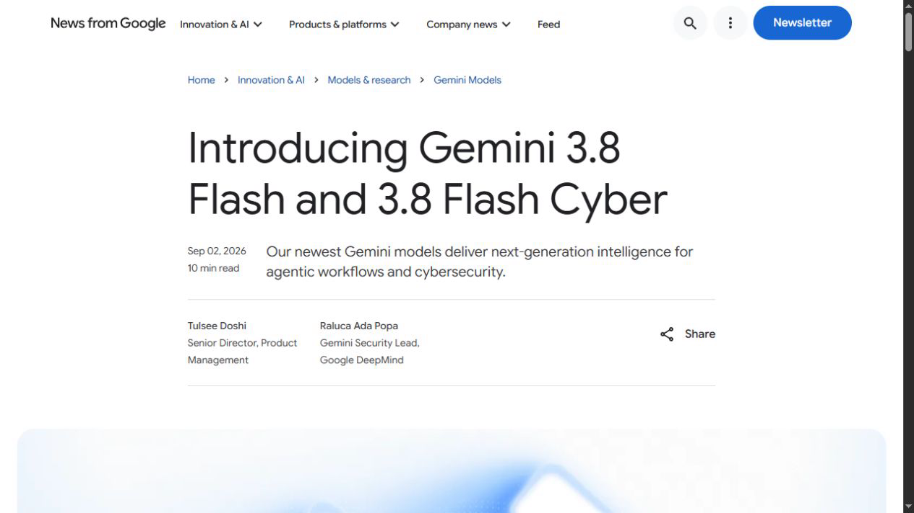
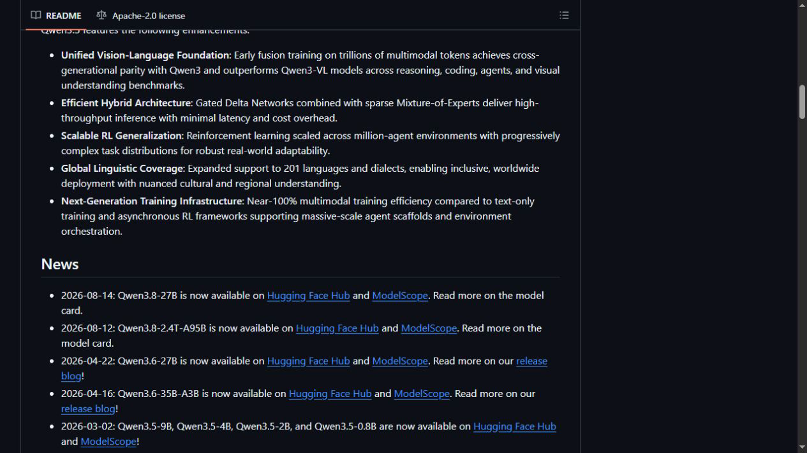
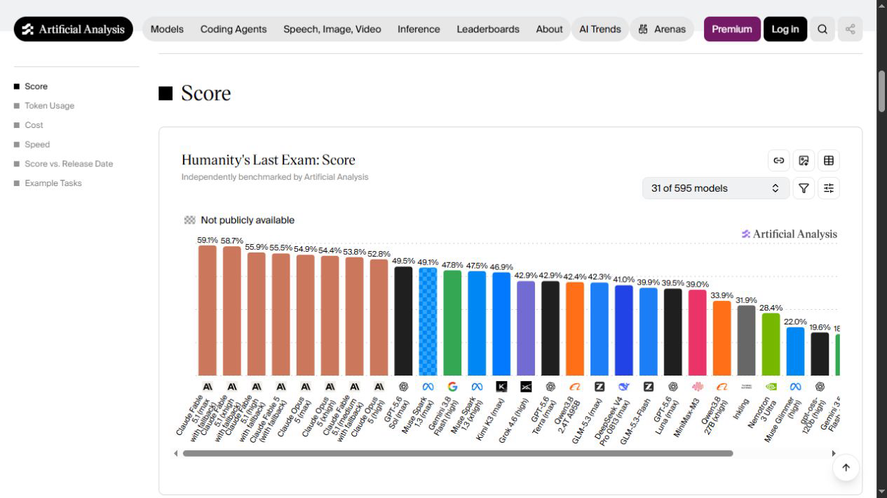
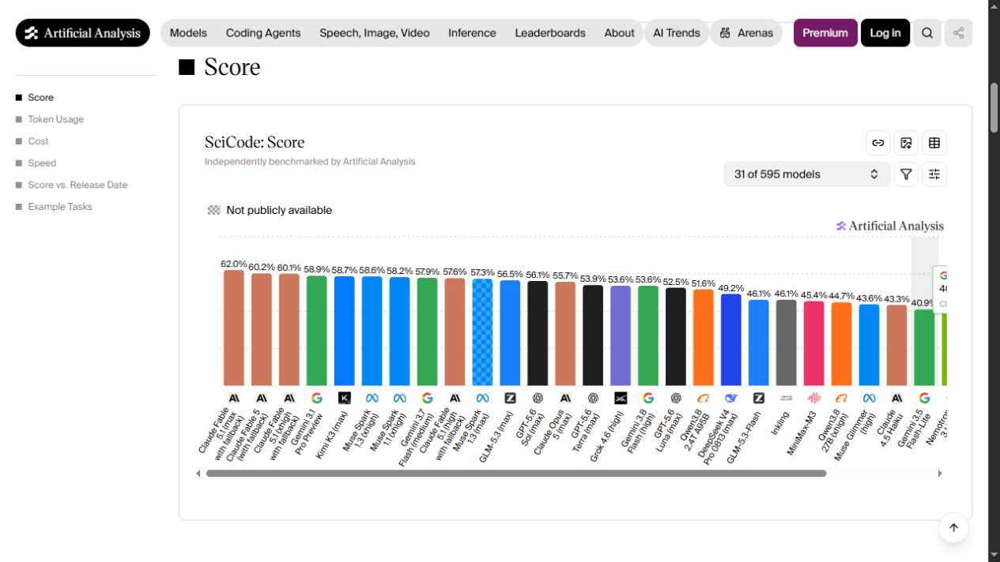
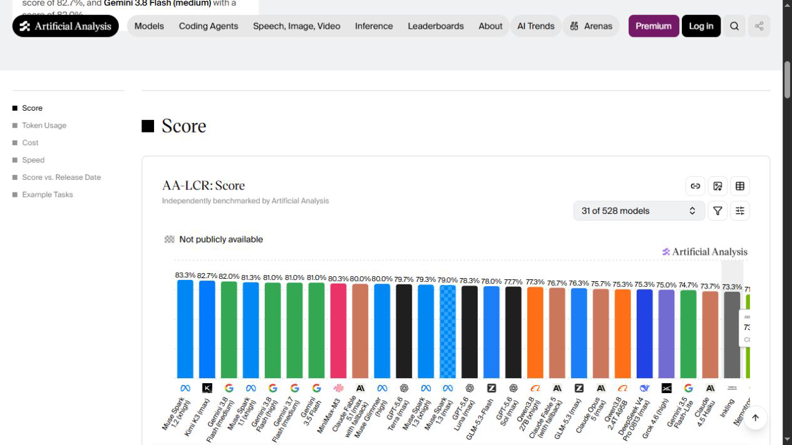
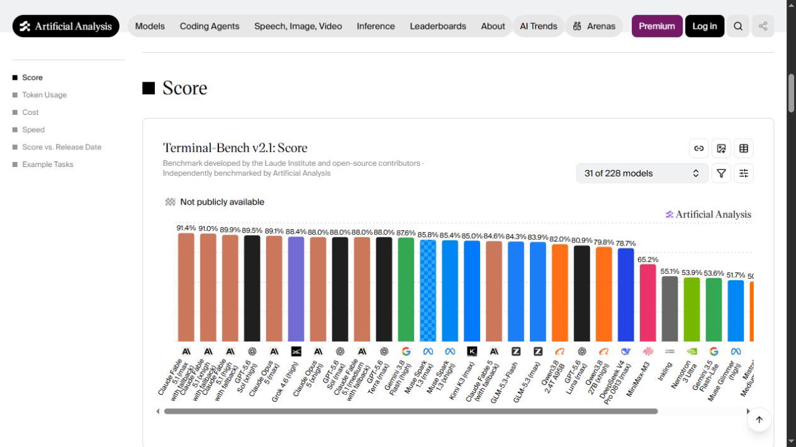
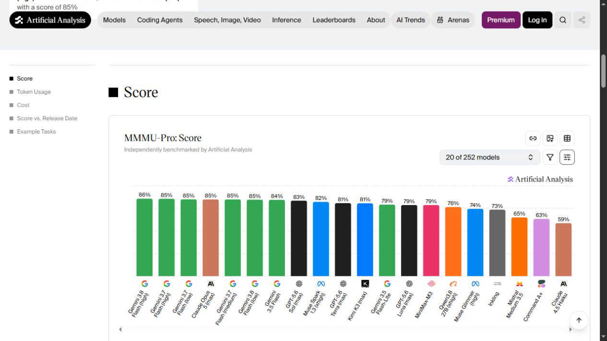
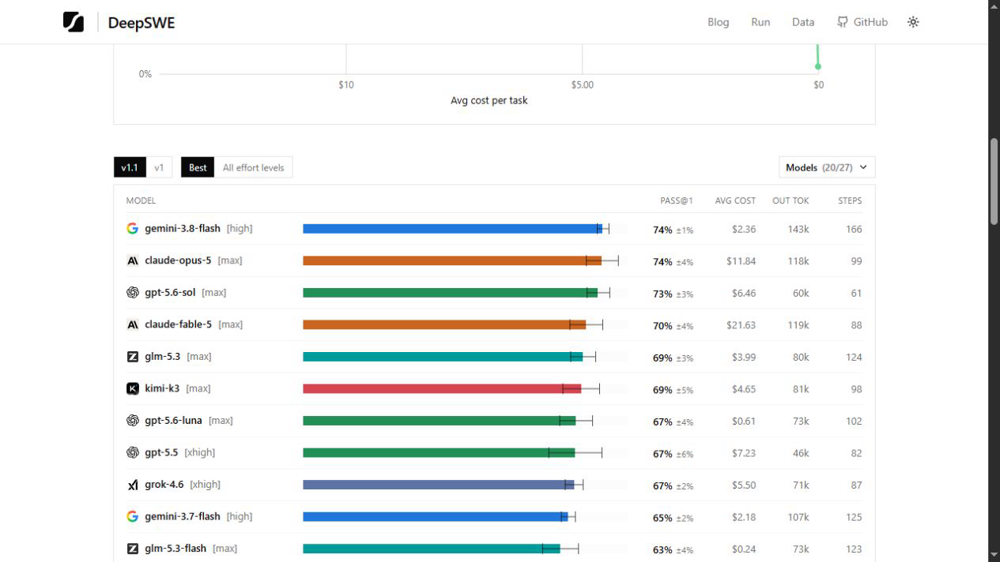
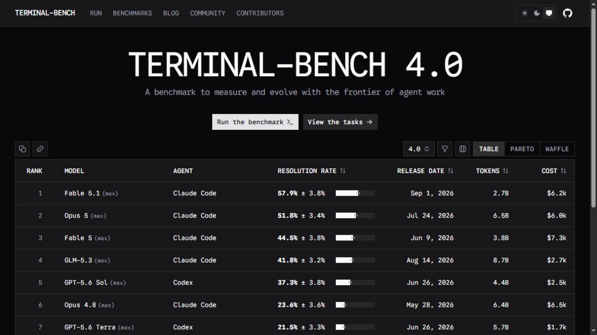
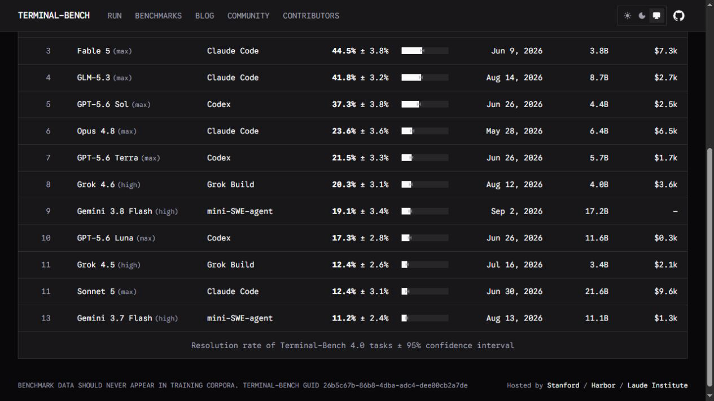
Complete sweep and release research
Tracked benchmarks: all 21 production sources were opened in the visible browser. APEX, ARC-AGI-2, ARC-AGI-3, EnigmaEval, ERQA, IntPhys 2, MindCube, SkateBench, SpatialViz, SWE-Bench Pro, SWE-bench Verified, ALE-V1, Tau2, Terminal-Bench Hard, and TextQuests produced no additional safe insert in this batch.
Provider sweep: OpenAI, Anthropic, Google, SpaceXAI, Z.ai, NVIDIA, Qwen, DeepSeek, Moonshot, Meta, MiniMax, Mistral, Cohere, and Thinking Machines were checked. Fable 5.1 and Gemini 3.8 Flash are the newly released applicable families; Qwen3.8-27B is the resolved carry-forward identity.
Research candidates: Terminal-Bench 4.0, Finance Agent v2, Harvey LAB, and HLE-Rolling were evaluated and deferred for the protocol reasons above.
Validation and publication
- Manifest validation passed; 139/139 tests passed; tier consistency and credential scans passed.
- The pre-apply dry-run predicted exactly 8 model creates and 25 score inserts, with 0 refreshes and 0 replacements.
- The post-apply dry-run is idempotent: all 25 scores are unchanged and no write remains.
- Pre-write mirror: Convex 593, D1 593, drift 0.
- Post-write mirror: Convex 618, D1 618, drift 0.
- No benchmark was created, no score was replaced, and no secret-bearing file was added.
- Cloudflare Pages returned the new report, and all 8 affected model pages plus all 6 affected benchmark pages passed visible-browser checks.
Run learnings
- Release-day leaderboards require exact effort and fallback naming.
- Qwen3.8-27B must not be collapsed into 2.4T-A95B or Max.
- Terminal-Bench 4.0 needs a harness-aware schema before curation.
- Moving or private test sets need versioned, reproducible public protocols.